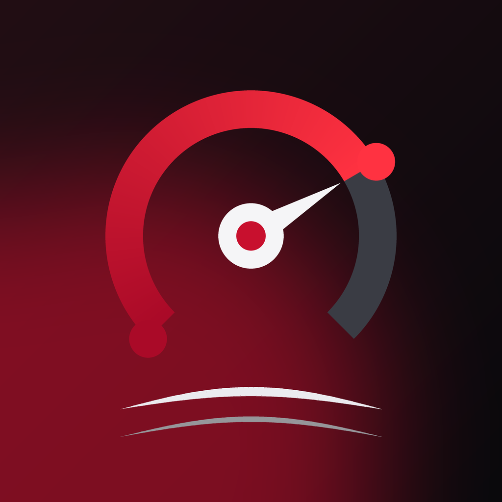
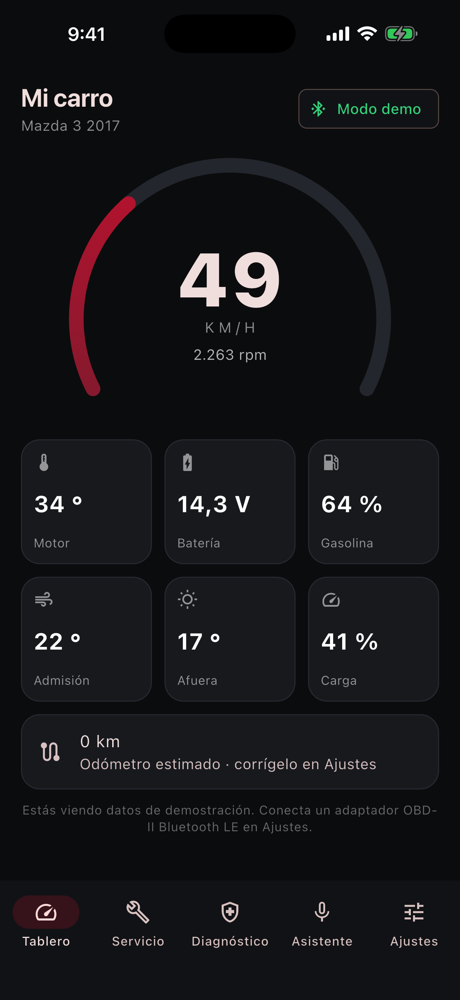
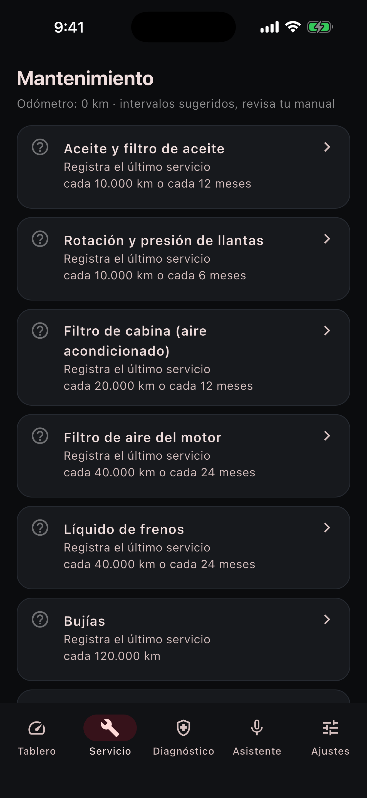
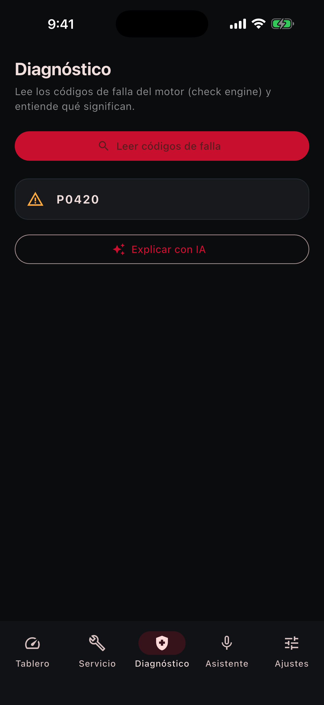

¿Funciona con mi carro? Con la mayoría de carros a gasolina desde 2008 que tengan puerto OBD-II. Algunos datos (como el nivel de gasolina) dependen del modelo.
¿Por qué no encuentra mi adaptador? En iPhone solo funcionan adaptadores Bluetooth LE. Los adaptadores "Bluetooth clásico" no son compatibles.
¿Necesito internet? Solo para el asistente. El tablero, el diagnóstico y el mantenimiento funcionan sin conexión.
Reporta problemas o sugerencias en github.com/jeronimotech/mzd-owner/issues. Lee nuestra política de privacidad.
MZD Owner es un proyecto independiente de código abierto (MIT) de JeronimoTech, no afiliado con Mazda Motor Corporation.